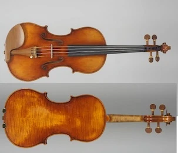

Huntsville Violins
Since 1999, we have been providing high quality and affordable violin, viola, cello, and bass rentals in Huntsville, AL. We also have instruments for purchase, and offer professional repairs in-house.
Services
- violin, viola, cello & bass rentals, all sizes
- instruments for sale
- repairs
- lessons
Visit Us
Monday - Sunday: 10am - 6pm
Very flexible hours, but please call ahead.
7920 Charlotte Dr SW
Ste D
Huntsville, AL 35802
Featured Instruments
Johannes Kohr
Howard Core's standout brand, known for rich tone and affordability. The K-500 model is a favorite among teachers.
Ming Xiang Zhu
Gold medal-winning craftsmanship from one of the world’s top violin makers.
Scott Cao
Meticulously handcrafted violins, violas, and cellos with exceptional sound quality and attention to detail.